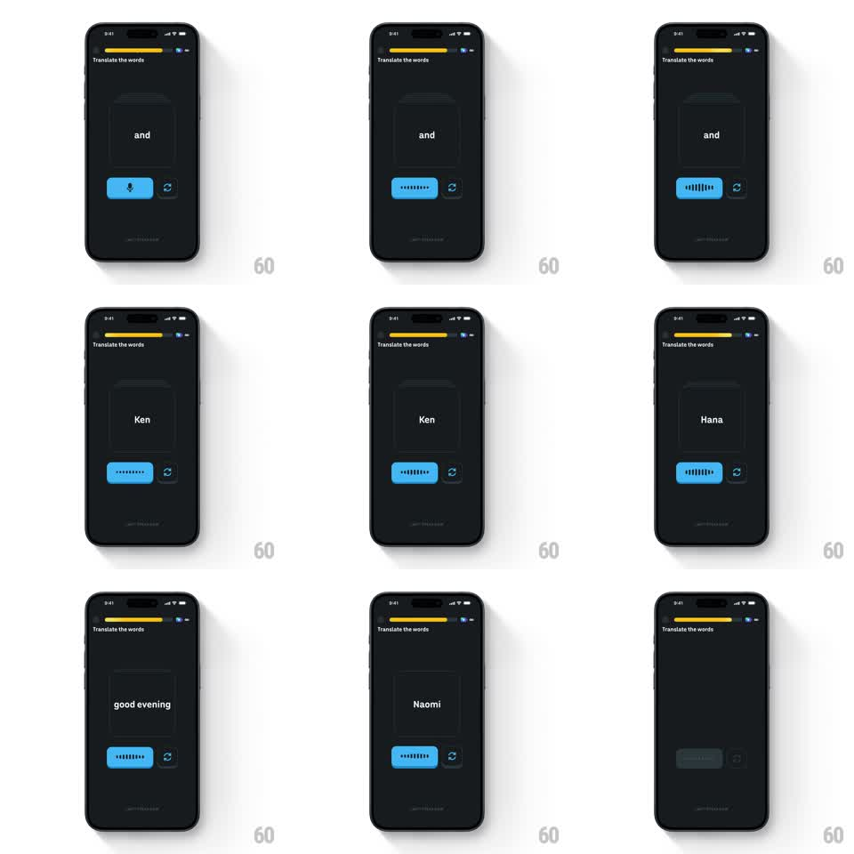

Media
Frame-by-frame

Rebuild this interaction 1:1: Duolingo's speaking exercise button - tapping the blue mic button morphs the mic glyph into a live audio waveform: a row of vertical bars inside the button that bounce with your voice amplitude while you speak the translation.

Rebuild this interaction 1:1: Duolingo's speaking exercise button - tapping the blue mic button morphs the mic glyph into a live audio waveform: a row of vertical bars inside the button that bounce with your voice amplitude while you speak the translation. ## Integration Integration: stack-agnostic spec - springs given as stiffness/damping, timed motions as duration + curve; map every value to your framework and animation library of choice. ## Scene Dark lesson screen: "Translate the words" header with progress bar, a large word card center (single word like "and", "Ken", "Hana"), and a wide blue pill button below with a mic icon, plus a small circular replay icon beside it. ## Motion spec Pattern: state-morphing button with live meter. - Tap: mic glyph scales down and out (100ms) as 7 vertical bars fade in across the button's center (150ms, 30ms stagger). - Listening: bars animate with input amplitude - heights spring toward the live level (fast attack ~60ms, release ~250ms), each bar phase-offset so the group reads as a wave, not a VU clone. Bars keep a small idle jitter (+-15% height, 400ms) at silence so the button feels alive. - The button pulses its blue fill subtly with the loudest bar (background brightness +8%). - Stop/timeout: bars collapse back to the mic glyph (150ms reverse). - The replay icon spins 180deg when tapped (200ms). ## Calibration - Amplitude mapping is logarithmic - whispers still move the bars. - Bar count 7-9: fewer looks like an equalizer toy, more muddies the shape. ## Reduced motion Bars show a steady average height; no idle jitter. ## Don't miss - The morph is mic -> waveform in the same pill, not a separate recording UI. - Bars are centered vertically and mirror around the midline.